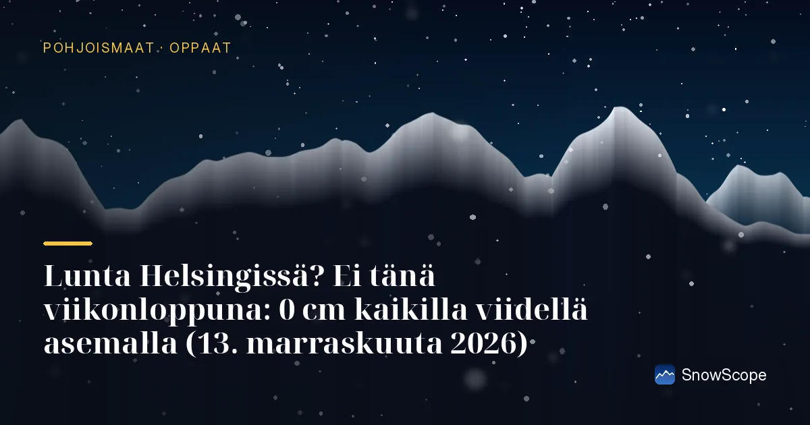

Lunta Helsingissä? Ei tänä viikonloppuna: 0 cm kaikilla viidellä asemalla (13. marraskuuta 2026)
Helsinki säilyy lumettomana perjantaina. Mittaukset Kaisaniemellä, Kumpulassa, Espoo Tapiolassa, lentoasemalla ja Nuuksiolla osoittavat kaikkialla paljaita maita. Vaikka pohjoisten kaupunkien, kuten Oulun ja Rovaniemen, alueet ovat jo valkeita, pääkaupunki sijaitsee väärällä puolella terävää sääjäyttävää rajaa, joka kulkee Keski-Suomen halki.
Katso kohteen Helsinki lumiennuste reaaliajassa SnowScope-sovelluksessaLumensyvyys, puuterihälytykset ja 3D-kartta, ilmaiseksi.
Lumiraja kulkee kauas kaupungin pohjoispuolella
13. marraskuuta todellinen lumipeite ei ulotu etelään noin 64. leveysasteelta. Oulun lähistöllä lähes kaikilla asemilla on lumi. 64. ja 66. leveysasteen välisellä alueella 23 viidestäkään 25 asemasta mittasi lumea. Sitä etelään tilanne muuttuu: koko Suomen eteläisessä puoliskossa rannikolta rannikolle vain 6 viidestäkään 53 asemasta mittaa lumea ollenkaan, eikä mikään asema ylittänyt 2 cm:ä.
Lähimpää valkoista maata Helsinkiin on Kiikalan lentoasemalla Salon lähellä, 78 km länteen, siellä on 2 cm. Seuraavat asemät sisämaassa mittaavat 1–2 cm. Luotettavaan lumipeitteeseen pääsemiseksi on ajettava tunteja pohjoiseen. Tämä raja on tyypillinen marraskuun puolivälissä, kun arktinen ilma painuu pohjoiseen ja itään, mutta lämmin Atlantin sää hallitsee vielä etelää.

Helsingin luminen tulevaisuus sesongin loppupuolella
Lumitiedot 46 kuluneen talven ajalta kertovat selkeää tarinaa. 13. marraskuuta kaupunki oli valkoinen vain 11 näistä talvista. Tämän päivämäärän mediaani on 0 cm, ja koskaan mitattu maksimi on 18 cm – harvinainen tapaus. Viiden viimeisen talven jokaisena päivänä 13. marraskuuta oli paljaita maita, aivan kuten tänään.
Puolessa menneistä talvista ensimmäinen pysyvä lumi oli saapunut jo 20. marraskuuta mennessä. Se tarkoittaa, että ensi viikko on tavallinen ikkuna, jolloin Helsinki saa mahdollisuutensa. Mutta kaupungin lumi on aina ohut alussa: 2 cm on tavallista 1. joulukuuta, 4 cm 15. joulukuuta mennessä ja noin 13 cm puoliväliin tammikuuta. Aikainen lumi sulaa helposti; todellinen kasautuminen kestää viikkoja.
Tänä viikonloppuna: tihku, ei lumihiutaleita
Lauantai pysyy harmaa ja nollan tuntumassa, 0–2 °C:ssa. Heikko sade ja tihku sataa, yhteensä 1–2 mm, mahdollisesti vähän märkää lunta, joka ei pysty lämpiminä maiden päällä. Sunnuntai muuttuu kuivemmaksi ja leuemmaksi, nousee noin 8 °C:een. Illalla paljaita katuja ja ruohikkoja on todennäköisesti taas näkyvissä.
Maanantai tuo lisää sadetta, 1–9 mm ennusteesta riippuen. Lumea ei ole odotuksissa kaupungissa tänä viikonloppuna. Maa on märkä ja kylmä, mutta ei valkoinen.
Mitä pitää seurata kaduilla
Vaikka lumi puuttuu, viikonloppu tuo omat vaarat. Pakkaspäivät ja märät päivät aiheuttavat liukkaat lehtikerrokset poluilla, ja siltojen pinnat usein jäätyvät avoimien maiden edellä. Varhaiset aamut ja illat ovat liukastumisriski. Käytä liukkaavastustavia kenkiä, jos aiot käydä rannikolla tai puistoissa.
Jos olet päättänyt etsiä lumea tänä viikonloppuna, aja pohjoiseen. Oulu, 600 km päässä, mittasi 7 cm tällä viikolla. Rovaniemella on 7–8 cm. Molemmat ovat vielä sesonkinsa alussa, mutta molemmat ovat valkeita. Helsingille jatko odottaa. Ensi viikon ennuste on mielenkiintoisempi.
Vinkkejä laskijoille
- Pakkaspäivät ja märät lehdet aiheuttavat todellisen liukastumisriskin tänä viikonloppuna: testaa jarru puistojen portaissa ja rannan poluilla ennen kuin kuormitat painoa.
- Jos olet poissa kaupungista ja näet sateella olevan lumennuste, aja pohjoiseen tänään tai huomenna. 62. leveysasteen etelään maa on paljas.
- Tarkista taas ensi viikolla. 20. marraskuuta on tavallinen saapumispäivä Helsingin ensimmäiselle pysyvälle lumelle, ja ennuste viikonlopun jälkeen kertoo, noudattaako tämä vuosi aikataulua.
- Aikainen lumi on ohut ja voi piilottaa kiviä ja juuria. Jos löydät lumea korkeammalta sisämaassa, hiihdä varovasti ja tarkkaile paljaita paikkoja.
- Pukeudu kerroksittain viikonloppuun: ilma on kylmä ja kostea, ei luminen. Vedenpitävä takki on tärkeämpi kuin lämpimät aluskerrokset nyt.
Näistä luvuista
Hiihtokeskusten lumensyvyydet ovat syvin lumi keskuksen ylärinteillä näytettynä päivänä; ne ovat arvioita alueelle, eivät mittaus yhdessä pisteessä. Ennusteet voivat muuttua. Lue aina virallinen lumivyöryennuste ennen rinteiden ulkopuolelle lähtöä.
Viittaa tähän raporttiin
Tutkimukseen, opetukseen tai mediaan: luvut ja kaaviot ovat vapaasti käytettävissä CC BY 4.0 -lisenssillä tällä lähdeviitteellä.
SnowScope (2026), Lunta Helsingissä? Ei tänä viikonloppuna: 0 cm kaikilla viidellä asemalla (13. marraskuuta 2026), https://snowscope.app/blog/fi/2026/11/helsinki-snow-today-13-november-2026.html, luettu 2026-11-13
SnowScope (Atlas Labs). (2026, November 13). Lunta Helsingissä? Ei tänä viikonloppuna: 0 cm kaikilla viidellä asemalla (13. marraskuuta 2026). SnowScope snow reports. https://snowscope.app/blog/fi/2026/11/helsinki-snow-today-13-november-2026.html
BibTeX
@misc{snowscope2026helsinkisnowtoday13novem,
author = {{SnowScope (Atlas Labs)}},
title = {Lunta Helsingissä? Ei tänä viikonloppuna: 0 cm kaikilla viidellä asemalla (13. marraskuuta 2026)},
year = {2026},
month = nov,
howpublished = {\url{https://snowscope.app/blog/fi/2026/11/helsinki-snow-today-13-november-2026.html}},
note = {Published 2026-11-13 20:09 UTC; accessed 2026-11-13}
}· CC BY 4.0 · Menetelmät, data ja työkalut →
Seuraa: Helsinki
Ilmainen: viesti, kun uutta lunta on tulossa, ja ennuste joka aamu.